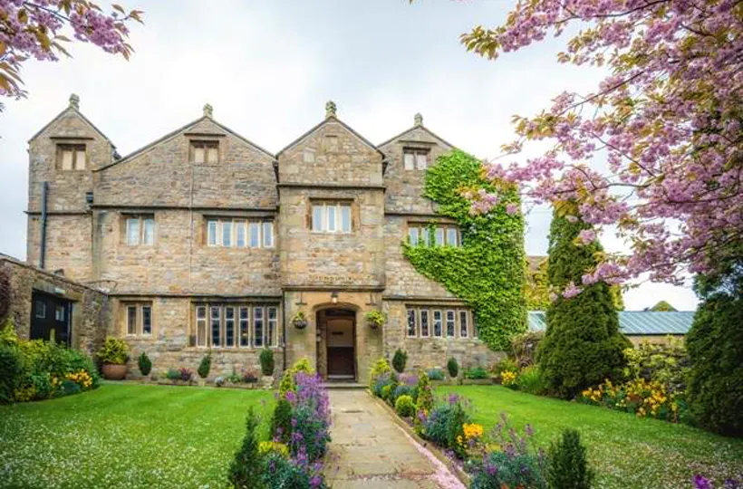
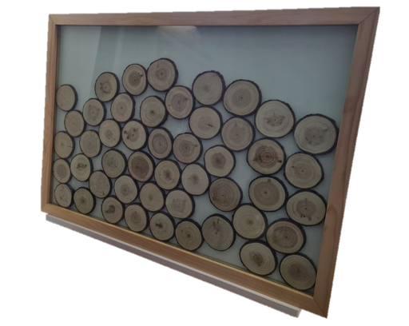

Arrival
Please all arrive at STIRK HOUSE by midday.
Stirk House
Gisburn Road
Clitheroe
BB7 4LJ
Please park in the lower car park - the upper car park is for the busses & wedding cars.
We are providing transport to and from the ceremony venue as there is a lack of parking at the ceremony venue, and this is an opportunity for you to chat to one another. It will also mean you are able to have a glass or two at the ceremony venue and not worry about driving.The buses will be departing Stirk House at 12.30pm and are set to arrive at the ceremony venue around 1pm.

The Journey
There will be 2 buses departing Stirk House to take you all to the Ceremony venue (The Priests House). There are limited seats on the buses, so to
make sure everyone has a seat - we have assigned your bus to you!
| Albion Coach (Light Blue) | Bristol Coach (Navy Blue) |
|---|---|
| Bairstow, Philip | Beard, Lesley |
| Bennet, Jamie | Benson, Nick |
| Birch, Darren | Cameron, Brett |
| Birch, Tracey | Cameron, Joanne |
| Dickenson, Paul | Cameron, Lilo |
| Griffin, Sean | Crickmore, Aimée |
| Harrison, Emma | Harrison, Gerry |
| Jenkins, Andy | Highton, Lois |
| Jenkins, Katie | Horan, Craig |
| Lynn, Rob | Horan, Marie |
| Morgan, Glyn | Horan, Melody |
| Morgan, Margaret | Killcross, Thomas |
| Parker, Andy | Marshall, David |
| Peel, Becci | Oaks, Matthew |
| Pennington, Elaine | Parker, Emma |
| Rawson, Gary | Parker, Erin |
| Redfern Bertie | Parker, Ryan |
| Redfern, Charlotte | Poll, Andy |
| Rigby, Antony | Raby, Katie |
| Rigby, Sally | Sherman, Helena |
| Rimmer, Darren | Stead, Joshua |
| Rimmer, Katie | Sumner, Janet |
| Sale, Debra | Sumner, Stewart |
| Sale, Michael | Wakes, Jasmine |
| Sheppard, Melvin | Wakes, Katrina |
| Stanley, Chris | Warburton, Nick |
| Stanley, Sarah | Warburton, Sara |
| Taylor, Lauren | |
| Wigley, Angela | |
| Wigley, Elizabeth | |
| Wigley, John |

The Ceremony
Please all be seated by 1.30pm. Music will be played by the pianist up until the bride walks down the aisle at 2pm.
Please refer to the Order of service that you find on your seats for specific ceremony timings.
Once the ceremony is over at roughly 2.45pm, drinks and canapés will be served around 3pm. During the next hour, photos will be taken
(including group shots) and some private shots of the bride and groom. (Please respect our privacy during this time - we have hired a photographer
so we can relax and have the time after the ceremony to ourselves for a short while. Once we are back to enjoy the canapés and drinks with you, you
can then explore the grounds and ruins to take any photos you wish.)
After drinks and canapés have been finished, and all photos at this location taken, the bride and groom will be departing around 4.15pm. Please
all make your way to the buses for a departure time of 4.30pm.
Note: Confetti will be provided to you as the venue is very strict on what types it will allow - we will give you a handful of dried delphinium.
Please let us know if you have any severe allergies to this type of flower.

The inbetween
On your arrival to Stirk House, some more drinks and canapés will be served for 5.30pm, there will be a seating plan here as each of you will
have personalised favours.
Speeches will be happening round 6pm.
The evening reception officially starts at 7.30pm.
The Reception

After the reception officially starts at 7.30pm, the cake cutting will be at 8pm, followed by the first dance.
The evening buffet will be served at 9pm.
The reception is due to finish around 11.30pm. Please find details of the venue on the 'Accommodation' link at the top of the page.
Before you head home...
At some point during the evening if you could sign our guest book that we have at the venue, that would be amazing.
There will be a wooden circle for you to write on (it will be at the table you are sat on) and drop into the frame. P.S. Tom has hand made this!